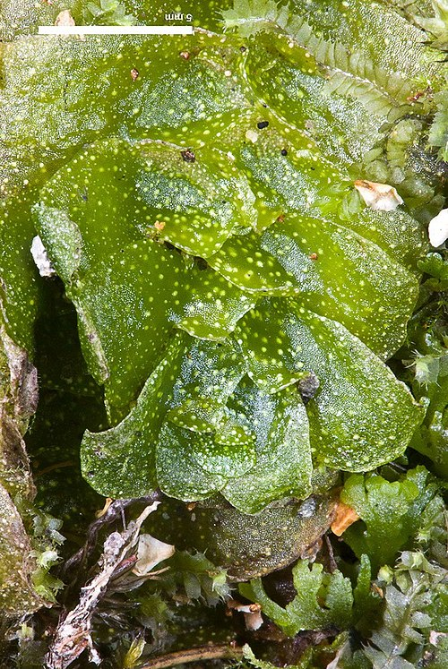

Treubiaceae
Treubia Liverworts
Treubiaceae is a small family of liverworts, containing the single genus Treubia. It is evolutionarily significant as it, along with its sister family Haplomitriaceae, forms the class Haplomitriopsida, representing one of the earliest diverging lineages of liverworts. These plants are notable for their often large size (for liverworts), leafy appearance, lack of typical rhizoids, and distinctive dorsal slime papillae.
Overview
The Treubiaceae family includes only the genus Treubia, with approximately 6-10 species. These liverworts are distinguished by their relatively large, fleshy, leafy gametophytes that grow prostrate or ascending. Like their relatives in Haplomitriaceae, they lack typical rhizoids but possess unique slime papillae, which in Treubia are characteristically located on the dorsal (upper) surface of the stem and leaves, often appearing as small dots or bumps.
Species of Treubia are predominantly found in the Southern Hemisphere, particularly in humid, cool temperate rainforests of Australasia (New Zealand, Australia, New Guinea) and southern South America, with some extending into tropical Asia. They typically grow on moist soil, humus, or decaying logs on the forest floor.
Treubiaceae holds considerable scientific interest due to its basal phylogenetic position and unique morphological features. Studying Treubia provides insights into the early evolution of liverwort body plans, reproductive strategies, and adaptations to terrestrial life. They have no direct economic importance.
Quick Facts
- Scientific Name: Treubiaceae
- Common Name: Treubia Liverworts
- Number of Genera: 1 (Treubia)
- Number of Species: Approximately 6-10
- Distribution: Primarily Southern Hemisphere (Australasia, southern South America), also tropical Asia; cool, moist forests.
- Evolutionary Group: Bryophytes - Liverworts (Marchantiophyta) - Class Haplomitriopsida
Key Characteristics
Growth Form and Habit
Plants are relatively large (often several centimeters long), fleshy, leafy gametophytes, typically growing prostrate or ascending, sometimes forming mats. Stems may show dichotomous branching. A defining feature is the absence of typical multicellular rhizoids; anchorage may involve unicellular slime papillae or rudimentary peg-like rhizoids. Distinctive stalked or sessile mucilage papillae are present, notably on the dorsal surface of stems and leaves.
Leaves
Leaves are arranged in three ranks but appear strongly dorsiventral. There are two ranks of large, succubously inserted dorsal leaves, which are often broad, sometimes lobed or with wing-like appendages, giving the plant a flattened appearance. There is also one rank of smaller, scale-like ventral leaves (underleaves) pressed against the stem. Leaves lack a costa (midrib). The dorsal slime papillae are a key feature.
Reproductive Structures
Treubiaceae are dioicous (separate male and female plants). Gametangia (sex organs) are typically borne on the dorsal surface of the stem. Antheridia (male organs) are sunk in cavities or protected by scale-like bracts. Archegonia (female organs) are also dorsal, often surrounded by scales or flaps of tissue, sometimes forming a structure called a pseudoperianth after fertilization.
Sporophyte and Spores
The sporophyte consists of a foot, a long, massive seta (stalk), and a large, ovoid to cylindrical capsule. The capsule wall is thick (multistratose). Dehiscence occurs typically via four longitudinal valves that split from the apex downwards. The capsule contains numerous small spores and long, spirally thickened elaters that aid in spore dispersal.
Spores are dispersed by wind after the capsule opens, facilitated by the hygroscopic movements of the elaters.
Chemical Characteristics
Like Haplomitriaceae, Treubiaceae produce significant amounts of mucilage from their specialized papillae, likely for protection against desiccation. The detailed secondary chemistry is less studied compared to other liverwort groups, but they likely possess unique compounds related to their distinct evolutionary history.
Field Identification
Identifying Treubiaceae requires recognizing their unique combination of features, distinguishing them from other leafy and thalloid liverworts:
Primary Identification Features
- Large, fleshy, leafy gametophyte: Often significantly larger than many other liverworts.
- Absence of typical rhizoids: Check the underside; no dense mat of typical rhizoids (may have slime papillae or peg-rhizoids).
- Two prominent dorsal leaf ranks: Large, often overlapping leaves give a flattened appearance.
- One rank of smaller ventral underleaves: Scale-like leaves on the underside.
- Dorsal slime papillae: Look for small dots, bumps, or glistening patches on the upper surface of leaves and stems (may require a hand lens).
Secondary Identification Features
- Succubous leaf insertion: Dorsal leaves overlap like shingles pointing towards the shoot apex.
- Lobed or winged leaves: Dorsal leaves are often not simple but have lobes or wing-like extensions.
- Habitat: Consistently moist, shaded forest floors, often on soil, humus, or rotting logs in cool temperate rainforests.
Seasonal Identification Tips
- Gametophyte: Present year-round in suitable moist habitats.
- Sporophyte: Development is seasonal. The large sporophyte with its thick seta and capsule is conspicuous when present but may be infrequent.
Common Confusion Points
- Haplomitriaceae: Distinguished by Treubiaceae's more dorsiventral appearance, two large dorsal leaf ranks vs. three more equal ranks, and dorsal vs. apical/axillary slime papillae.
- Other large leafy liverworts (e.g., some Jungermanniales like Plagiochila): Most possess typical rhizoids and lack dorsal slime papillae; leaf shapes and arrangements differ.
- Thalloid liverworts (e.g., Pellia, Marchantia): Distinguished by their flattened, ribbon-like thallus structure rather than distinct stems and leaves.
Field Guide Quick Reference
Look For:
- Large, fleshy leafy liverwort
- NO TYPICAL RHIZOIDS
- Two large dorsal leaf ranks
- Smaller ventral underleaves
- DORSAL slime papillae (dots/bumps)
- Succubous leaf insertion
Key Distinctions:
- Distinguished from Haplomitriaceae by dorsiventral look and dorsal papillae.
- Distinguished from other leafy liverworts by lack of typical rhizoids and dorsal papillae.
- Distinguished from thalloid liverworts by clear stem/leaf structure.
- Habitat: cool, moist forest floor/logs.
Notable Examples (Genus Treubia)
All members of the family belong to the genus Treubia. Here are a couple of representative species:

Treubia lacunosa
(No common name)
Found in New Zealand and Tasmania. This species is characterized by its large size and the distinctly pitted or lacunose (having cavities or depressions) appearance of the dorsal leaf surfaces, related to the arrangement of slime papillae.

Treubia pygmaea
(No common name)
Despite the name, this species can still be relatively large. It has a distribution including parts of South America and potentially other Southern Hemisphere regions. It differs from T. lacunosa in leaf morphology and surface texture.
Phylogeny and Classification
Treubiaceae occupies a critical position in liverwort phylogeny. Along with Haplomitriaceae, it forms the class Haplomitriopsida, which represents a sister group to all other extant liverworts (class Jungermanniopsida and Marchantiopsida). This deep evolutionary split highlights the ancient origins of this lineage.
The family exhibits a mosaic of ancestral traits (e.g., lack of typical rhizoids, simple conducting cells) and potentially derived features (e.g., complex dorsal slime papillae, specific leaf arrangements). Studying Treubiaceae is essential for understanding the character evolution at the base of the liverwort tree and the early diversification of land plants.
Position in Plant Phylogeny
- Kingdom: Plantae
- Clade: Embryophytes (Land plants)
- Division: Marchantiophyta (Liverworts)
- Class: Haplomitriopsida
- Order: Treubiales
- Family: Treubiaceae
Evolutionary Significance
Treubiaceae is highly significant for understanding plant evolution due to:
- Basal phylogenetic position: Sister group (with Haplomitriaceae) to all other liverworts.
- Unique morphological traits: Features like dorsal slime papillae and the specific leaf arrangement provide insights into the diversity of early liverwort forms.
- Insights into ancestral states: Helps reconstruct the characteristics of the last common ancestor of liverworts.
- Biogeography: Its predominantly Southern Hemisphere distribution relates to Gondwanan history and ancient land connections.